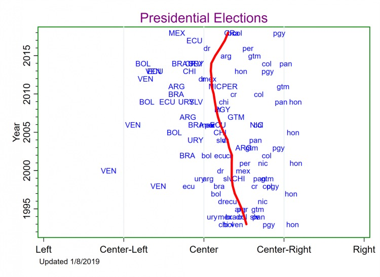

Latin American Elections and Ideology
How Far Left or Right Are Latin American Electorates?
Please note: In July 2016, we released the 2.0 version of the presidential elections dataset, which contains better source documentation and corrects a few small errors in the post-2008 data. Although the differences are minor, you should replace the old version with this 2.0 version if you downloaded it prior to July 2016. Because of the proliferation of many new parties for which we do not yet have expert-generated ideological scores, we are not sure when we will update the legislative elections data.
Presidential Elections
The rise of the Latin American left after the mid-1990s and the sense that more recent elections are generating victories for conservative candidates has led many to ask the following question: How far to the left or right are Latin American electorates in their vote choices? Kenneth F. Greene and I answer that question on this website. We studied the ideology of vote choices as well as the causes of these choices through 2008 in our published article. On this website, we present and will continually update our new measure (called “Vote Revealed Leftism” in the article) of Latin America’s ideological tendency as expressed through its vote choices. In the figure to the right, the blue labels plot the ideological leaning of electorates in each presidential election since 1993 in 18 countries. These ideological leanings are based on a simple formula with just two inputs: parties’ ideologies and their vote shares. (See the article for the math.) All else equal, when a leftist party does well in an election, the country for that election year receives a more leftward score. When a rightist party does well, the country for that election year receives a more rightward score. Notice, for example, how the leftward placement of the blue “VEN” labels between 1998 and 2012 captures Venezuelans’ taste for Mr. Chávez. (A label in all caps means a left-of-center candidate won the election.) The central tendency through all of these blue points is represented by the red line. In other words, this red line is our estimate of how far left/right Latin American electorates have been in each year.
The Left Turn
The figure does show evidence of the so-called “pink tide” or “left wave”–the red line shifted leftward after 1993. But this finding comes with a number of surprising qualifications. Most importantly, the shift was not very dramatic. Latin Americans did not move even one whole notch on the five-point “Right–Center Right–Center–Center Left–Left” ideological scale. In fact, they barely moved half a notch. Instead, they moved from half way between Center and Center-Right in 1993 to nearly dead center by 2014. In other words, there were still A LOT of rightists, and, even at the left wave’s peak, Latin Americans on average were very much centrists. A related surprise is that voters trended leftward between 1993 and 1999, stayed level a few years, and then continued leftward between 2002 and 2014. In other words, the left wave did NOT begin right after 1998 as is often presumed.
A Right Turn?
Since then, the figure clearly shows signs that the left wave has crested and is starting to reverse–and sharply so. As is sometimes presumed, this began with the election of Macri in Argentina, and the rightward turn indicated by the red line is now based on 10 post-2014 elections. (Note that two elections marred by credible accusations of fraud, VEN2018 and HON2017, are not included in the figure).
If you would like technical details on how we calculated and constructed all of this, please see our article and its on-line appendix. You should also download the dataset and read the “readme.doc” file.